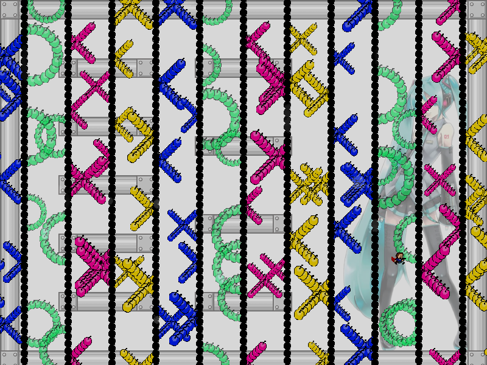
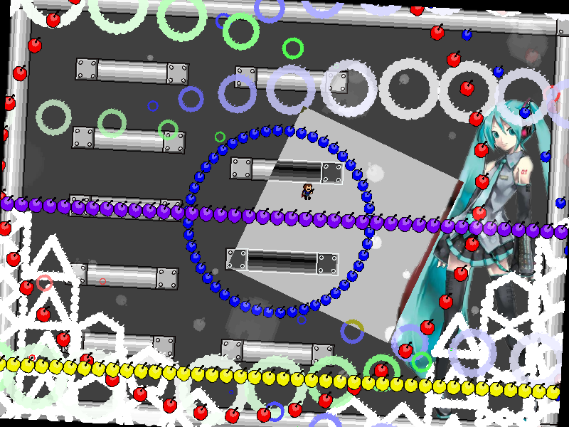
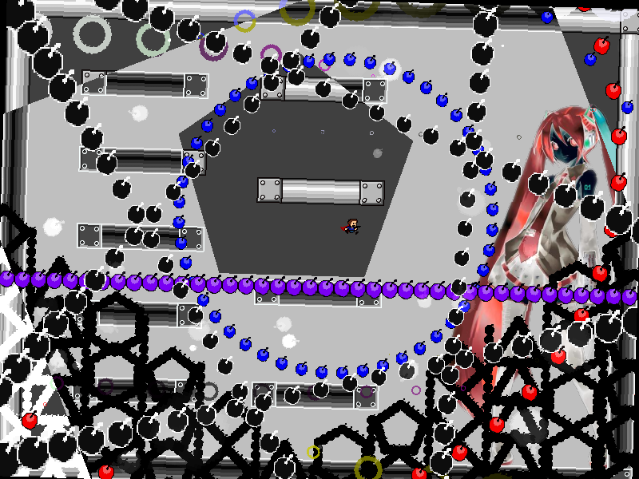
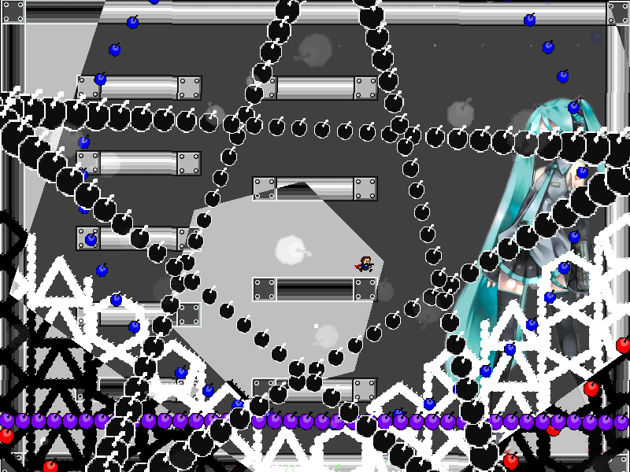
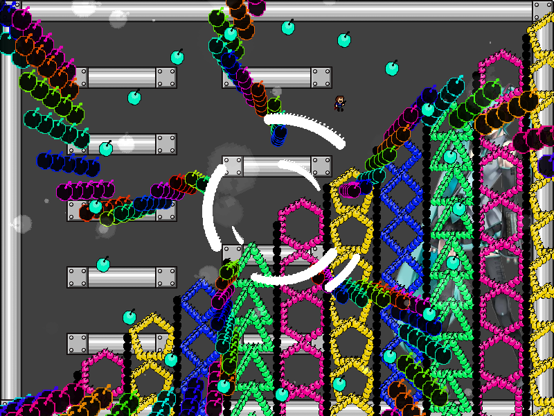

chapter8 - section5

| creator | segment | label | jump |
|---|---|---|---|
| NN | 1:48.80~1:50.10 | A*S | double |
8-3の解答に対応する、択一型の弾幕です。
1:46.50、1:46.70、1:46.90において生成される背景演出（fig.8-5.1.a~fig.8-5.1.c）の形状関して、これらは三角形、四角形、五角形、六角形のいずれかの形状をとります。



とり得る多角形のうち、1:46.50、1:46.70,、1:46.90のいずれにおいても出現しなかったものが正解の形状に対応しています（fig.8-5.2.a, fig.8-5.2.b）


なお、fig.8-5.2.aに示す各形状と列の対応については固定であり、正解の形状から正解の列が一意に定まります。
また、fig.8-5.1.a~fig.8-5.1.cに示す背景演出に関して、頂点の数が少ない多角形から順番に出現することを意識することで攻略がしやすくなるかもしれません。